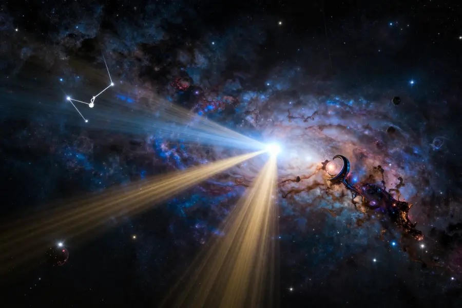

The Wow! Signal: Did We Receive a Message From Aliens in 1977?

The Big Ear radio telescope at Ohio State University that detected the Wow! Signal in 1977!
On August 15, 1977, a radio telescope at Ohio State University detected something extraordinary — a strong, narrowband radio signal coming from deep space that lasted for exactly 72 seconds. It was so unusual that astronomer Jerry Ehman grabbed a red pen, circled the data on the printout, and wrote one word: "Wow!"
Nearly 50 years later, the Wow! Signal remains the strongest candidate ever detected for an extraterrestrial broadcast. Despite dozens of attempts to find it again, the signal has never repeated. What was it?
Overview
A Signal Like Nothing Before or Since
The Wow! Signal was detected by the Big Ear radio telescope at Ohio State University. The telescope was scanning the sky as part of SETI (Search for Extraterrestrial Intelligence) when it picked up a signal that stood out dramatically from the background noise.
What made it special was its frequency: 1420.405 MHz, also known as the "hydrogen line." This is the frequency that hydrogen atoms naturally emit, and many scientists believe any advanced civilization would use this frequency to communicate because it would be universally recognized across the cosmos.
The actual printout showing the signal - Jerry Ehman circled it and wrote "Wow!" in red ink!
📡 The Numbers
The signal intensity was represented by the characters "6EQUJ5" on the printout. The "U" represented a signal strength 30 times louder than the background space noise — an extremely strong reading for a narrowband signal!
Evidence
A useful way to read this evidence is by confidence level. High-confidence points are independently confirmed by multiple sources; medium-confidence points are plausible but debated; low-confidence points stay provisional until stronger data appears.
Research on the Wow! Signal is strongest when radio astronomy data, signal analysis, and independent observation attempts converge. The signal's uniqueness makes it both scientifically valuable and difficult to explain.
Key Facts About the Signal
- 📍 Originated from the direction of the constellation Sagittarius
- ⏱️ Lasted exactly 72 seconds — matching what a telescope would detect from a fixed point as the Earth rotated
- 📻 Frequency matched the hydrogen line (1420 MHz) — the "universal frequency"
- 🔍 Never detected again despite over 100 follow-up observations
The signal was reviewed by multiple scientists and confirmed to be genuine — not equipment malfunction, not satellite interference, and not a terrestrial broadcast. It was real, and it came from space.
Competing Explanations
Competing explanations usually persist because each one fits part of the evidence while missing another part. Researchers test these models against chronology, physical constraints, and independent documentation to identify which interpretation requires the fewest assumptions.
Natural or Artificial?

The signal appeared to come from the direction of the constellation Sagittarius!
The leading natural explanation is that the signal was caused by a hydrogen cloud passing through the line of sight of the telescope. In 2016, researchers proposed that a comet might have produced the signal — specifically comets 266P/Christensen and P/2008 Y2.
However, this comet theory has been challenged. The Wow! Signal's characteristics — particularly its narrow bandwidth and intensity — don't perfectly match what we would expect from a comet. Several astronomers have argued that the comet hypothesis doesn't fully explain the signal's unique properties.
🌌 The Alien Hypothesis
If the signal was from an alien civilization, they would have been broadcasting with a transmitter roughly 1,000 times more powerful than anything on Earth. The signal traveled for potentially thousands of years before reaching Ohio!
Open Questions
Open questions remain because source quality is uneven across time: some records are direct and detailed, while others are fragmentary or second-hand. Future archival discoveries, improved imaging, and more precise dating methods may refine conclusions without overturning well-supported core findings.
Will We Ever Know?
The biggest obstacle to solving the Wow! Signal mystery is that it never repeated. In science, a single observation is rarely enough to draw firm conclusions. Without a second detection, the signal remains tantalizing but inconclusive.
New radio telescopes like the Square Kilometre Array currently under construction will be far more sensitive than the Big Ear. Some scientists believe these instruments could finally detect signals like the Wow! Signal again — or find even more compelling evidence of extraterrestrial intelligence.
The Wow! Signal remains our strongest hint that we might not be alone in the universe!
📖 Recommended Reading
Want to learn more? Check out The Elusive Wow: Searching for Extraterrestrial Intelligence on Amazon for a deeper dive into this fascinating topic. (As an Amazon Associate, we earn from qualifying purchases.)
References & Further Reading
- Britannica overview of the Wow! Signal
- NASA SETI page on the Wow! Signal
- Space.com explainer on the Wow! Signal
- Big Ear Radio Observatory detailed analysis
- Google Scholar literature search
Editorial note: reconstructions are continuously revised as imaging and inscription studies improve. See our Editorial Policy.